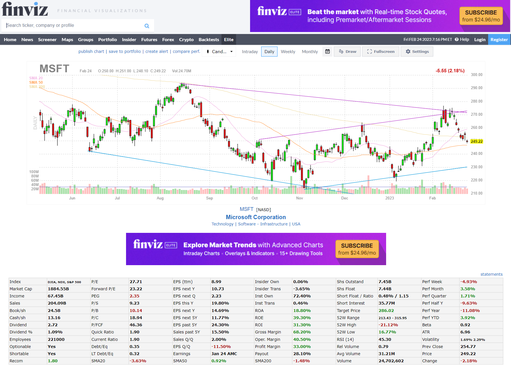
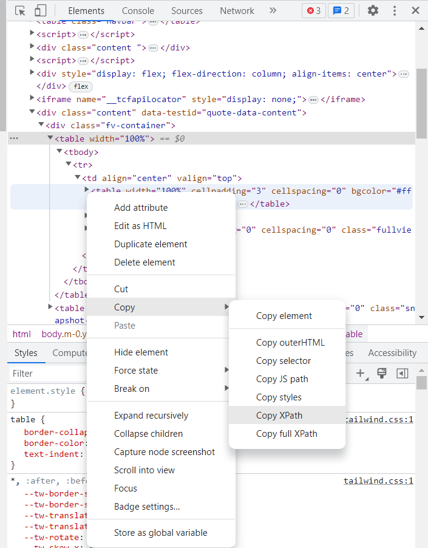

If you’re an active trader or investor, you’re probably aware of the importance of keeping up with the latest stock market news and trends. One tool that many traders use to stay on top of market movements is Finviz, a popular financial visualization website that offers a range of powerful tools and data visualizations to help traders make informed investment decisions.
While Finviz is a valuable resource for traders, manually collecting and analyzing data from the website can be time-consuming and inefficient. But this is a data science blog, right? Let’s build a scraper to make our life easier! With this simple function I’m about to show, you will be able to extract the data from the website and analyze it in a streamlined way.
Before diving into the topic, it’s important to note that web scraping can potentially violate website terms of service and can even be illegal in some cases. Let’s be polite and don’t use this code to resell any information, as this is not permitted by their terms of use. For educational and personal purposes only.
To build this simple scraper we are going to use the rvest package. R developers are quite funny, aren’t they?
First thing is to get the full html we will parse later.
symbol <- "MSFT"
finviz_url <- glue::glue("https://finviz.com/quote.ashx?t={symbol}")
finviz_html <- tryCatch(rvest::read_html(finviz_url), error=function(e) NULL)This is what the website look like after searching for a ticker.

We want to focus mainly on the table at the bottom which contains a ton of information for the company, including relevant data such as market capitalization, P/E, insider and institutional ownership or short interest. Also, it’s nice to have our companies organized by sector and industry, as this information is also relevant for potential analysis. Let’s get this small piece of information first, which sits right below the chart, in the middle of the page:
sector_str <- finviz_html %>%
rvest::html_element(xpath = '/html/body/div[4]/div/table[1]') %>%
rvest::html_table() %>%
head(1) %>%
pull(X4)
sector_str## [1] "Technology | Software - Infrastructure | USA"Finding the path to the specific element we are looking for is as easy as stepping into developing mode in the web browser (F12) and find your way to the element within the html code. Right-click and copy XPath as shown in the image below:

It’s easy to notice that the information we got above it’s all stored as a character of length one. This is typically undesirable as they represent different variables.
We can clean it easily with some text engineering. Tidyverse saves the day again:
sector_df <- sector_str %>%
str_split("[|]", simplify = T) %>%
str_squish() %>%
as_tibble() %>%
mutate(variable = c("sector", "industry", "country")) %>%
relocate(variable) %>%
add_row(variable = "ticker", value = symbol, .before = 1)
sector_df## # A tibble: 4 × 2
## variable value
## <chr> <chr>
## 1 ticker MSFT
## 2 sector Technology
## 3 industry Software - Infrastructure
## 4 country USAMuch better.
We will scrape now the main table:
raw_tbl <- finviz_html %>%
rvest::html_element(xpath = '/html/body/div[4]/div/table[2]') %>%
rvest::html_table() However, in this case variables and values are totally mixed up in the table:
## # A tibble: 12 × 12
## X1 X2 X3 X4 X5 X6 X7 X8 X9 X10 X11 X12
## <chr> <chr> <chr> <chr> <chr> <chr> <chr> <chr> <chr> <chr> <chr> <chr>
## 1 Index DJIA,… P/E 28.23 EPS … 8.99 Insi… 0.06% Shs … 7.45B Perf… 2.33%
## 2 Market Cap 1918.… Forw… 23.63 EPS … 10.75 Insi… -0.7… Shs … 7.44B Perf… -1.1…
## 3 Income 67.45B PEG 2.35 EPS … 2.23 Inst… 72.4… Shor… 0.46… Perf… 5.97%
## 4 Sales 204.0… P/S 9.40 EPS … 19.8… Inst… 0.46% Shor… 34.3… Perf… -2.4…
## 5 Book/sh 24.58 P/B 10.33 EPS … 14.8… ROA 18.8… Targ… 285.… Perf… -7.1…
## 6 Cash/sh 13.17 P/C 19.28 EPS … 12.0… ROE 39.3… 52W … 213.… Perf… 8.44%
## 7 Dividend 2.72 P/FCF 47.19 EPS … 24.3… ROI 31.3… 52W … -17.… Beta 0.91
## 8 Dividend % 1.07% Quic… 1.90 Sale… 15.5… Gros… 68.2… 52W … 21.8… ATR 6.35
## 9 Employees 221000 Curr… 1.90 Sale… 2.00% Oper… 40.5… RSI … 56.94 Vola… 2.68…
## 10 Optionable Yes Debt… 0.35 EPS … -11.… Prof… 33.0… Rel … 0.90 Prev… 253.…
## 11 Shortable Yes LT D… 0.32 Earn… Jan … Payo… 28.1… Avg … 31.2… Price 260.…
## 12 Recom 1.90 SMA20 1.73% SMA50 4.59% SMA2… 3.01% Volu… 11,4… Chan… 2.42%We can extract headers and values with the following chunk of code:
# flatten_chr will collapse all columns into one vector
headers <- raw_tbl %>% select(seq(1,11,2)) %>% flatten_chr()
values <- raw_tbl %>% select(seq(2,12,2)) %>% flatten_chr()This is what the header vector looks like now:
## [1] "Index" "Market Cap" "Income"
## [4] "Sales" "Book/sh" "Cash/sh"
## [7] "Dividend" "Dividend %" "Employees"
## [10] "Optionable" "Shortable" "Recom"
## [13] "P/E" "Forward P/E" "PEG"
## [16] "P/S" "P/B" "P/C"
## [19] "P/FCF" "Quick Ratio" "Current Ratio"
## [22] "Debt/Eq" "LT Debt/Eq" "SMA20"
## [25] "EPS (ttm)" "EPS next Y" "EPS next Q"
## [28] "EPS this Y" "EPS next Y" "EPS next 5Y"
## [31] "EPS past 5Y" "Sales past 5Y" "Sales Q/Q"
## [34] "EPS Q/Q" "Earnings" "SMA50"
## [37] "Insider Own" "Insider Trans" "Inst Own"
## [40] "Inst Trans" "ROA" "ROE"
## [43] "ROI" "Gross Margin" "Oper. Margin"
## [46] "Profit Margin" "Payout" "SMA200"
## [49] "Shs Outstand" "Shs Float" "Short Float / Ratio"
## [52] "Short Interest" "Target Price" "52W Range"
## [55] "52W High" "52W Low" "RSI (14)"
## [58] "Rel Volume" "Avg Volume" "Volume"
## [61] "Perf Week" "Perf Month" "Perf Quarter"
## [64] "Perf Half Y" "Perf Year" "Perf YTD"
## [67] "Beta" "ATR" "Volatility"
## [70] "Prev Close" "Price" "Change"Perfect! Finally pasting all the info together, we get this fine data frame containing all the information:
finviz_df <- tibble(value = values) %>%
bind_cols(variable = headers, .) %>%
bind_rows(sector_df, .)
finviz_df## # A tibble: 76 × 2
## variable value
## <chr> <chr>
## 1 ticker MSFT
## 2 sector Technology
## 3 industry Software - Infrastructure
## 4 country USA
## 5 Index DJIA, NDX, S&P 500
## 6 Market Cap 1918.49B
## 7 Income 67.45B
## 8 Sales 204.09B
## 9 Book/sh 24.58
## 10 Cash/sh 13.17
## # … with 66 more rowsWe can easily assemble a function joining all these pieces together. Ready to rumble:
Get_finviz_data <- function(symbol){
Sys.sleep(1) # It's a good practice to use a sleep to make repeated calls to the server
finviz_url <- glue::glue("https://finviz.com/quote.ashx?t={symbol}")
finviz_html <- tryCatch(rvest::read_html(finviz_url), error=function(e) NULL)
if(is.null(finviz_html)) return(NULL)
sector_str <- finviz_html %>%
rvest::html_element(xpath = '/html/body/div[4]/div/table[1]') %>%
rvest::html_table() %>%
head(1) %>%
pull(X4)
sector_df <- sector_str %>%
str_split("[|]", simplify = T) %>%
str_squish() %>%
as_tibble() %>%
mutate(variable = c("sector", "industry", "country")) %>%
relocate(variable) %>%
add_row(variable = "ticker", value = symbol, .before = 1)
raw_tbl <- finviz_html %>%
rvest::html_element(xpath = '/html/body/div[4]/div/table[2]') %>%
rvest::html_table()
headers <- raw_tbl %>% select(seq(1,11,2)) %>% flatten_chr()
values <- raw_tbl %>% select(seq(2,12,2)) %>% flatten_chr()
finviz_df <- tibble(value = values) %>%
bind_cols(variable = headers, .) %>%
bind_rows(sector_df, .)
return(finviz_df)
}And there you have it! A functional scraper in less than 30 lines of code where we showed how to use the convenient library rvest to download financial data from any public company. If you are interested in using R to work with financial data, check out this series we are working on.